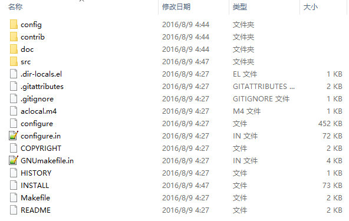
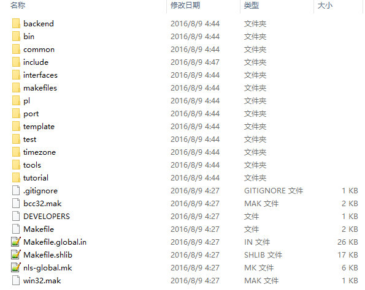
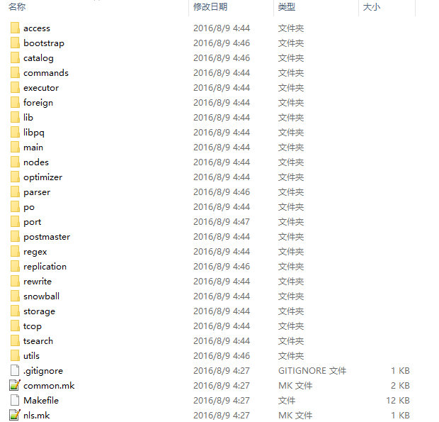
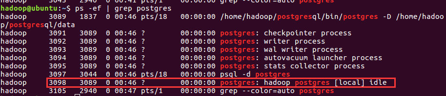
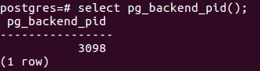
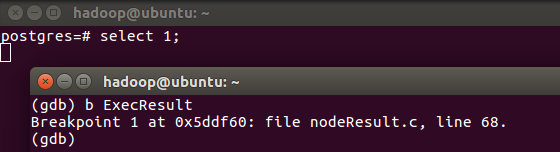
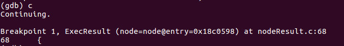
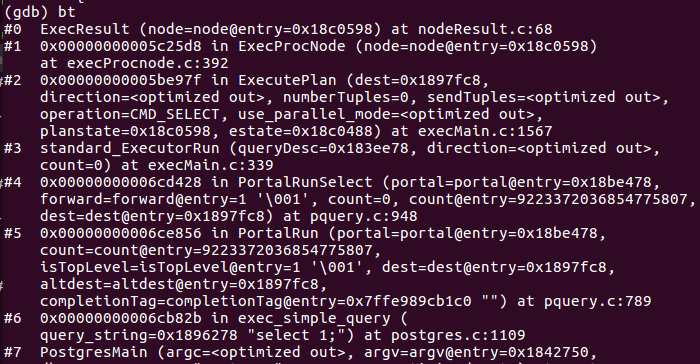
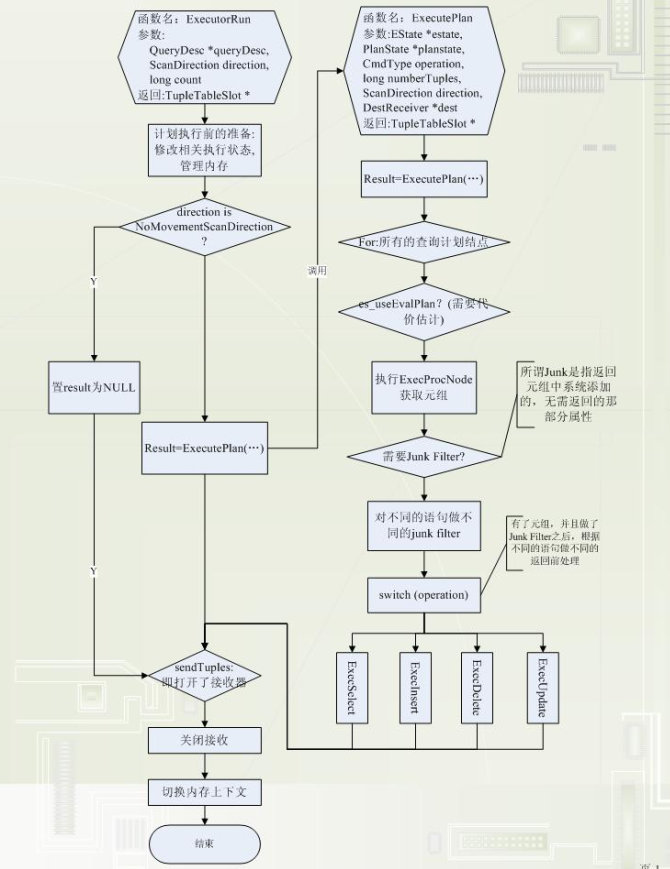

postgresql从最早20万行左右的代码量上升到近200万行，所以为了便于调试工作，需要大家在理解目录结构的基础上，按照流程跟踪调试代码
目录结构
首先进入postgresql的第一级目录

config文件夹主要放的是一些配置文件；
contrib文件夹里放的是一些第三方的插件、扩展程序等，常用的有pg_standby、postgres_fdw这些；
doc文件夹不用说放的是一些帮助文档和manuals；
最主要的是src目录，这里放置的是postgresql的源代码，也是我们调试和跟踪的主要文件目录；configure和Makefile这些是程序编译时要用的文件
进去src目录，

首先那几个Makefile文件什么的就不用多介绍了，主要看看这几个文件夹。
- bin/
- 放置了postgresql的unix命令，比如psql、initdb这些的源代码; backend/
- postgresql后端程序的源代码; include/
- 头文件;
- interfaces/
- 前端相关的库的代码（包括pgsql的C语言库libpq）;
- makefiles/
- 平台相关的make的设置文件; pl/
- 存储过程语言的代码; port/
- 平台移植相关的代码; template/
- 平台相关的设置文件; test/
- postgresql自带的各种测试脚本; timezone/
- 时区相关的代码文件; tools/
- 各种开发工具和文档; tutorial/
- 各种相关教程。
可以看出比较核心的是backend、bin、interfaces这三个目录，其中backend对应后端（服务器端），剩下两个对应前端（客户端）。
Backend
对于我们的调试工作，大部分关注点集中在后端，即backend目录，在该目录下细分了好多目录：

- access/
- 各种存储访问方法(在各个子目录下) common(共同函数)、gin (Generalized Inverted Index通用逆向索引) 、gist (Generalized Search Tree通用索引)、hash (哈希索引)、heap (heap的访问方法)、index (通用索引函数)、 nbtree (Btree函数)、transam (事务处理)、 bootstrap/ 数据库的初始化处理(initdb的时候)
- catalog/
- 系统目录 commands/
- SELECT/INSERT/UPDATE/DELETE以为的SQL文的处理 executor/
- 执行器(访问的执行) foreign/
- FDW(Foreign Data Wrapper)处理 lib/
- 共同函数 libpq/
- 前端/后端通信处理 main/
- postgres的主函数
- nodes/
- 构文树节点相关的处理函数
- optimizer/
- 优化器 parser/
- SQL构文解析器 port/
- 平台相关的代码 postmaster/
- postmaster的主函数 (常驻postgres)
- replication/
- streaming replication regex/
- 正则处理 rewrite/
- 规则及视图相关的重写处理 snowball/
- 全文检索相关（语干处理）
- storage/
- 共享内存、磁盘上的存储、缓存等全部一次/二次记录管理(以下的目录)buffer/(缓存管理)、 file/(文件)、freespace/(Fee Space Map管理) ipc/(进程间通信)、large_object /(大对象的访问函数)、 lmgr/(锁管理)、page/(页面访问相关函数)、 smgr/(存储管理器) tcop/
- postgres (数据库引擎的进程)的主要部分
- tsearch/
- 全文检索 utils/
- 各种模块(以下目录) adt/(嵌入的数据类型)、cache/(缓存管理)、 error/(错误处理)、fmgr/(函数管理)、hash/(hash函数)、 init/(数据库初始化、postgres的初期处理)、mb/(多字节文字处理)、misc/(其他)、mmgr/(内存的管理函数)、 resowner/(查询处理中的数据(buffer pin及表锁)的管理)、sort/(排序处理)、time/(事务的 MVCC 管理)
利用gdb调试
既然要用gdb跟踪调试程序，我们首先要知道postgresql后端进程的pid，然后才能attach上进行调试（对gdb命令不熟悉的可以先自行百度下：参考URL：https://www.cnblogs.com/xsln/p/gdb_instructions1.html）。
要获取postgresql的pid，我们有两个办法。
方法一、使用ps命令查看
- 首先进入psql：psql -d postgres
- 然后查看：ps -ef | grep postgres
- 我们可以看到

那个[local] idle 提示的那个就是我们要的，可知进程pid为3098；
方法二、直接在进入postgresql后运行下面的查询语句：select pg_backend_pid();

也可以得到进程的pid，方便快捷。
得到进程的pid后，我们就可以进入gdb调试了。
另开一个窗口，我们输入如下命令：sudo db postgres 3098
select命令
调试postgresql，我们先以最简单的SQL文作为例子演示如何调试跟踪代码。例如：select 1;
在这个状态下，可以接受gdb命令，这里，我们使用b命令在ExecResult处打上断点，再回到postgresql的窗口，执行SQL：

我们可以看到因为postgres进程已经暂停，SQL会卡在那里动不了，这也是我们的目的，不然怎么一步一步的调试呢？
我们再回到gdb这边，运行c命令，程序就会继续执行下去，然后再断点处（ExecResult）停止。
（注释：c 是gdb中的断点（continue），具体解释见给的GDB URL中 三.11）

我们当然会很好奇执行路径上走过了哪些文件调用了哪些函数？
好的，我们执行gdb的bt命令：
（注释：bt 是gdb中的栈信息（backtrace），具体解释见给的GDB URL中 三.1）

这一大串就是我们梦寐以求的函数调用的堆栈了。这样从程序开始到ExecResult为止的函数调用都有了。既然说是“堆栈”，我们自然是要反着看的，比如，我们可以看到最早调用的是main函数，它在（at）main.c文件里，在main函数的第228行，调用了PostmasterMain函数，依次类推即可知道函数的调用路径。
知道了函数的调用路径，我们可以一步一步地看看这条语句是怎么走的了。
以postgresql9.6.12为例：

#13 main.c 内：
line99： 函数MemoryContextInit()启动必须的子系统error和memory管理系统;
line110：函数set_pglocale_pgservice()获取并设置环境变量;
line146~148: 函数init_locale初始化环境变量;
line219~228：根据输入参数确定程序走向，这里进入了PostmasterMain(),跳转至postmaster.c文件。
#12#11#10#9 postmaster.c 内：
该文件中定义了后端的常驻进程"postmaster"所使用的主要函数接口和数据结构定义。postmaster接受前端的请求，建立新的backend进程。
line561~623：读取上下文信息和配置文件，完成初始化;
line630~812：读取postmaster的参数;
line930~1000：建立socket通信;
line1100~1159：建立shared memory和semaphores以及堆栈和pipe，初始化子系统(stats collection、autovacuum);
line1296：进入ServerLoop()函数,跳转至line1604;
line1604:ServerLoop()函数入口。该函数循环监听端口上的连接请求;
line1673~1699：判断是否有"合法"的连接请求，fork一个子进程去处理它，进入BackendStartup()函数，跳转至line3857;
line3857：BackendStartup()函数入口。该函数负责开启一个新的backend进程;
line3858~3914：做一些初始化准备(数据结构，开启和关闭一些必要的进程等等);
line3917：进入BackendRun()函数，跳转至line4179;
line4179：BackendRun()函数入口，该函数运行backend进程，主要干两件事：1.建立参数列表并初始化2.调用PostgresMain()函数;
line4243：调用PostgresMain()函数，进入postgres.c文件.
#8#7 postgres.c 文件内：
该文件定义了postgres后端的主要模块，相当于后端的main，并且负责后端进程的调度。
line3572：PostgresMain()函数入口。根据输入的dbname，username和输入参数建立一个会话;
line3573~3801：初始化工作。开设初始化环境和默认参数，设置信号处理函数和其他参数，建立内存上下文，设置share buffer等等等等;
line3825：进入POSTGRES的主处理循环,这个if语句主要用于判断输入处理是否有异常等;
line3933：进入处理循环中。该循环监听新的查询请求并判断请求的类别;
line4045：判断查询请求为simple query，调用exec_simple_query()函数,跳转至line884;
line884：exec_simple_query()函数入口。该函数做一些初始化工作，建立一个transaction command，做简单的语法规则判断，分析重写，并为该查询建立查询计划，并返回查询结果;
line1104：进入函数PortalRun()，进入pquery.c文件.
#6#5 pquery.c 文件内：
该文件定义了postgres后端查询语句的代码。
line706：PortalRun()函数入口。该函数负责运行一个或一组查询;
line786：进入PortalRunSelect()函数，跳转至line888;
line888：PortalRunSelect()函数入口。该函数只能执行简单的SELECT查询操作;
line942：进入ExecutorRun()函数，进入execMain.c文件.
#4#3#2 execMain.c 文件内：
该文件给出了执行的四个接口函数，分别是ExecutorStart() ExecutorRun() ExecutorFinish() ExecutorEnd()。
line279：ExecutorRun()函数入口。该函数时执行模块的主要部分，它接受一个查询描述符并真正的执行一个查询语句;
line285：进入standard_ExecutorRun()函数。跳转至line289;
line289：standard_ExecutorRun()函数入口。它执行"标准"的查询;
line337：进入ExecutePlan()函数，跳转至line1517;
line1517：ExecutePlan()函数入口。还记得前面exec_simple_query()说的查询计划么？这里用上了，执行该查询计划。
line1541：进入查询计划执行的主循环;
line1549：进入ExecProcNode()函数,进入execProcnode.c文件.
#1 execProcnode.c 文件内：
该文件内提供了执行查询计划的调度函数，功能分别是：
ExecInitNode()：初始化查询计划的节点以及其子查询计划;
ExecProcNode()：通过执行查询计划获得元组;
ExecEndNode()：关闭一个查询节点和它的子查询计划。
line367：ExecProcNode()函数入口;
line385：进入ExecResult()函数，跳转至文件nodeResult.c.
#0 nodeResult.c 文件内：
该文件主要为每个查询计划的节点提供支持。
line67：ExecResult()函数入口，该函数返回查询计划获得的元组。
这一段从#13到#0的函数调用简单分析
Join命令
CREATE TABLE t1(
key integer not null,
v1 varchar(10)
);
CREATE TABLE t2(
key integer not null,
v2 varchar(10)
);
INSERT INTO t1 VALUES
(1, 'a'), (2, 'b'), (3, 'c'), (4, 'd'), (5, 'e'), (6, 'f');
INSERT INTO t2 VALUES
(1, 'A'), (2, 'B'), (3, 'C'), (4, 'D'), (5, 'E'), (6, 'F');
执行join命令：
select *
from t1
left join t2 on t1.key = t2.key
gdb 设置断点的几种方式
方式1、根据函数名，查找符号（symbol）设置断点
此种方式最为简单，阅读源代码，了解函数如何调用，在需要暂停运行的函数入口进行断点设置。但并不是所有函数，任何时候都能设置断点的。比如优化后的静态函数，inline函数。在特定的情况下，通过函数名进行断点设置便不可为，而又需要查看运行时该函数的运行情况，这时就需要使用第二种方式。
例子：b func_name
方式2、根据代码行位置设置断点
当无法通过方式1进行设置断点，而又明确知道，程序运行到源代码文件中某个位置需要中断，则可通过在gdb中指定文件及代码位置进行断点设置。通过方式1和2，能解决绝大部分的跟踪问题，但是，在运行运行中，我们可能会碰到通过函数指针进行函数调用的情况，此时只知道函数指针的地址，就无法通过函数名或者代码行数进行
例子：b /src/codefile.cc:81。gdb将在运行到源码文件/src/codefile.cc的第81行中断
方式3、根据运行时的地址设置断点
此时有两种方式，一是通过直接指定地址进行，进行断点设置。二是通过print命令获得相关信息
例子1：b *0x5859c0。"*"号是必须加在地址前的，0x5859c0为函数指针的地址
例子2：展示变量内容
(gdb) p *thread_scheduler
在打印thread_scheduler变量的内容时，保存函数指针的变量add_connection的内容被打印出来，保活函数的指针和函数的名字，通过指针可使用b *0x5859c0进行断点设置；通过函数名可使用方式1进行断点设置
Reference
1.http://www.postgres.cn/docs/9.6/
2.https://www.cnblogs.com/flying-tiger/p/5859393.html
3.https://www.cnblogs.com/xsln/p/gdb_instructions1.html
4.《PostgreSQL查询处理部分源码分析》
5.http://www.postgres.cn/docs/10/